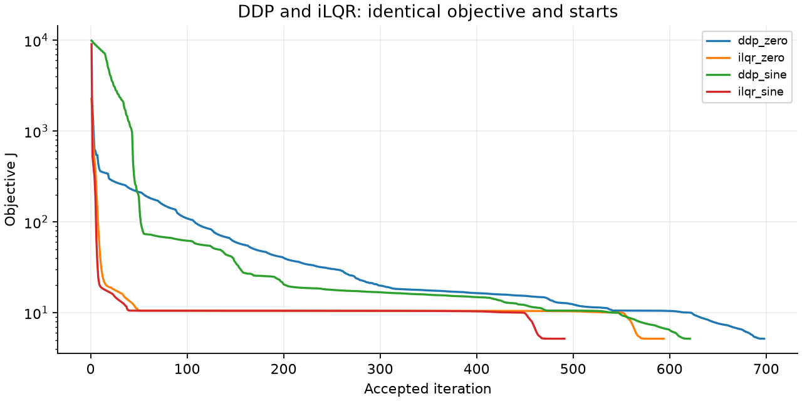
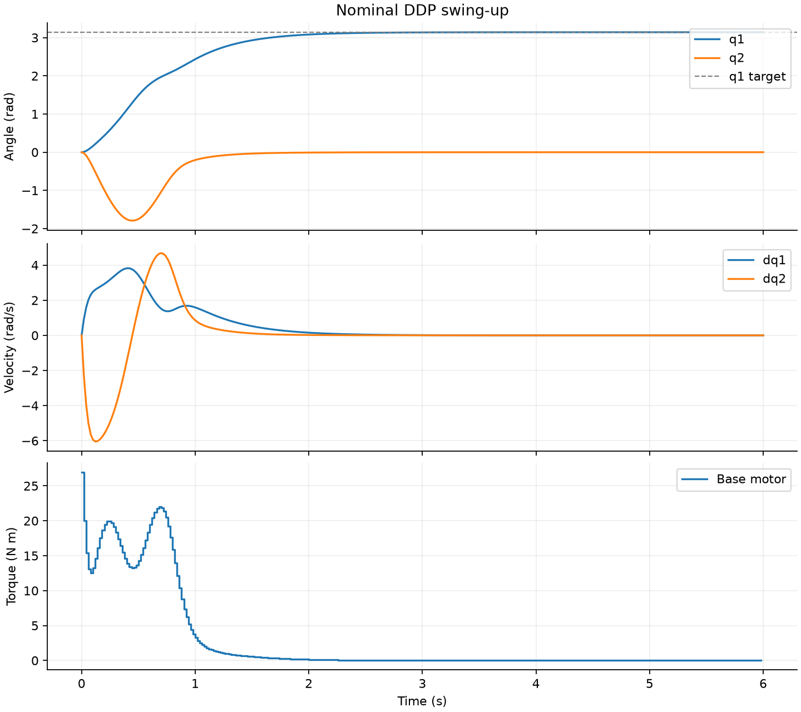
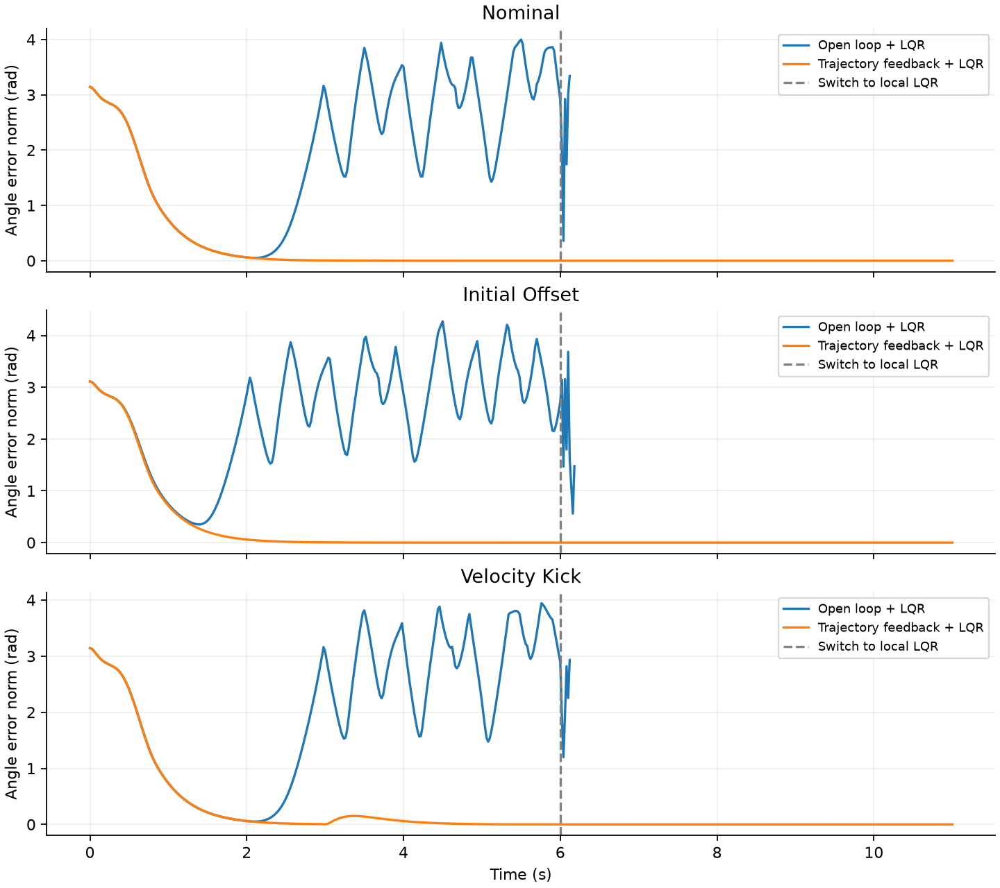
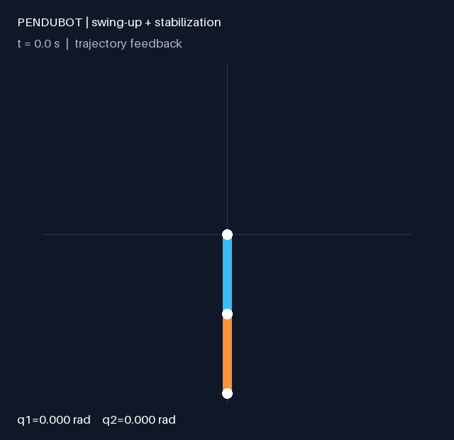

A reproducible numerical simulation using the supplied model, full DDP, iLQR, and sampled local LQR.
This is an ideal, frictionless, unlimited-torque simulation. Terminal penalties are soft. Results below are measured runs, including failed or unconverged attempts. Physical success and optimizer convergence are assessed separately. These trials do not establish global convergence or hardware feasibility.
Uniform links: m1=m2=1 kg, l1=l2=1 m, COM=0.5 m, COM inertia=1/12 kg m², g=9.81 m/s². q1 is measured from downward vertical; q2 is relative to link 1. Initial state [0,0,0,0], target [pi,0,0,0]. Horizon 6 s; RK4 step 0.02 s. Q=diag(1,1,0.1,0.1), QN=diag(2000,2000,200,200), r=0.01. The long horizon permits swing-up; moderate running state penalties favor approaching upright, strong terminal weights reduce arrival error, and a positive torque penalty discourages excessive actuation.
Swing-up succeeds if each angle error at 6 s is below 0.05 rad and each velocity below 0.10 rad/s. Holding succeeds if each angle stays below 0.10 rad and each velocity below 0.25 rad/s for the full additional 5 s. Angle errors for physical success are reduced modulo 2pi; optimization uses unwrapped angles as specified. No random inputs: zero and 4 sin(pi t) N m initial controls are deterministic.
| equilibrium max residual | mass matrix min eigenvalue | energy drift coarse joule | energy drift fine joule | jacobian fd max error | hessian fd max error |
|---|---|---|---|---|---|
| 3.60414e-15 | 0.0662791 | 2.04955e-05 | 2.85873e-10 | 6.21406e-12 | 4.86191e-10 |
Energy drift is the maximum absolute change over a 10 s unforced trajectory starting at [0.5,-0.3,0.2,-0.1]. Finite differences independently check the first and second derivatives of the complete discrete RK4 map. Only decreasing-cost forward rollouts are accepted.
| method | start | cost | iterations | seconds excluding compile | status | terminal error norm | terminal angle error rad | terminal velocity error rad s | peak torque nm | swing success |
|---|---|---|---|---|---|---|---|---|---|---|
| ddp | zero | 5.17531 | 698 | 4.13223 | converged | 1.87746e-07 | 4.10335e-08 | 1.6662e-07 | 26.9693 | True |
| ilqr | zero | 5.17531 | 594 | 0.954477 | converged | 1.867e-07 | 4.0938e-08 | 1.65642e-07 | 26.9685 | True |
| ddp | sine | 5.17531 | 621 | 3.48821 | converged | 1.86679e-07 | 4.09346e-08 | 1.65622e-07 | 26.9693 | True |
| ilqr | sine | 5.17531 | 491 | 0.726046 | converged | 1.86701e-07 | 4.09381e-08 | 1.65643e-07 | 26.9685 | True |
Both methods use identical costs, initial controls, horizon and stopping tolerances. Timings exclude explicit kernel warmup and include derivative evaluation, iteration, and final gain recomputation. Timing is one run per case on this computer, not a repeated benchmark. First-order JAX startup may still affect timings.
One-time shared kernel warmup: 2.036 s. Relative reduction tolerance 1e-8; maximum unscaled feedforward correction tolerance 1e-3 N m; both required for ordinary convergence. Maximum 1500 iterations. A stationary status means no improving step and a small correction at low regularization. The best-cost DDP trial is selected for execution: ddp_sine. See comparison status before treating a trial as converged.
For the zero start, DDP reached J=5.175306 in 698 iterations (4.13 s); iLQR reached J=5.175306 in 594 iterations (0.95 s). For the sine start, DDP reached J=5.175306 in 621 iterations (3.49 s); iLQR reached J=5.175306 in 491 iterations (0.73 s). The additional dynamics curvature did not improve the final objective in these runs, and full DDP required more iterations and computation. This is an experimental observation for these settings, not a general ordering of the two methods.


The table below records the same deterministic runs at 300 accepted iterations. This reproduces an unsuccessful convergence attempt with a 300-iteration budget: none met both stopping tolerances then. This is a failure of the convergence test, separate from the question of physically reaching upright. Allowing more iterations resolved these cases. Intermediate costs alone should not be used to rank final solutions.
| method | start | iteration budget | cost | relative drop | correction | converged |
|---|---|---|---|---|---|---|
| ddp | zero | 300 | 19.8885 | 0.00236881 | 0.598411 | False |
| ilqr | zero | 300 | 10.5155 | 1.37161e-05 | 0.258586 | False |
| ddp | sine | 300 | 16.8115 | 0.00100328 | 0.156948 | False |
| ilqr | sine | 300 | 10.4894 | 3.52613e-05 | 0.444486 | False |
Coarse execution uses the optimizer's RK4 model. Fine execution uses ten RK4 substeps per sample (0.002 s), holding each control fixed throughout the 0.02 s interval. Feedback uses final nominal trajectory gains. The initial offset is [0.03,-0.02,0,0]; the separate velocity kick at 3 s is [0,0,0.15,-0.10]. All policies switch at 6 s to the same local discrete LQR: QLQR=diag(100,100,10,10), RLQR=0.1.
Open-loop nominal replay maximum state difference: 0. LQR closed-loop spectral radius: 0.946551. A stable linearization alone does not prove nonlinear recovery from large disturbances.
| case | policy | integration | finite | arrival angle error rad | arrival velocity error rad s | hold max angle error rad | hold max velocity rad s | final state error norm | observed peak torque nm | termination time s | swing success | hold success |
|---|---|---|---|---|---|---|---|---|---|---|---|---|
| nominal | open_loop | RK4_dt | True | 4.09346e-08 | 1.65622e-07 | 6.57592e-08 | 2.86683e-07 | 3.08234e-12 | 26.9693 | Unavailable | True | True |
| nominal | feedback | RK4_dt | True | 4.09346e-08 | 1.65622e-07 | 6.57592e-08 | 2.86683e-07 | 3.08234e-12 | 26.9693 | Unavailable | True | True |
| initial_offset | open_loop | RK4_dt | False | 1.95733 | 15.9903 | Unavailable | Unavailable | Unavailable | 9076.75 | 6.06 | False | False |
| initial_offset | feedback | RK4_dt | True | 4.00475e-08 | 1.62e-07 | 6.42999e-08 | 2.80359e-07 | 3.01074e-12 | 27.2769 | Unavailable | True | True |
| velocity_kick | open_loop | RK4_dt | False | 2.34153 | 5.97871 | Unavailable | Unavailable | Unavailable | 211566 | 6.12 | False | False |
| velocity_kick | feedback | RK4_dt | True | 1.11893e-05 | 4.3694e-05 | 1.63233e-05 | 7.29602e-05 | 7.52771e-10 | 26.9693 | Unavailable | True | True |
| nominal | open_loop | RK4_dt/10 | False | 2.39316 | 9.65298 | Unavailable | Unavailable | Unavailable | 34681.7 | 6.14 | False | False |
| nominal | feedback | RK4_dt/10 | True | 4.09435e-08 | 1.65703e-07 | 6.57872e-08 | 2.86799e-07 | 3.08172e-12 | 26.9693 | Unavailable | True | True |
| initial_offset | open_loop | RK4_dt/10 | False | 1.93245 | 11.6759 | Unavailable | Unavailable | Unavailable | 46115.8 | 6.2 | False | False |
| initial_offset | feedback | RK4_dt/10 | True | 4.00542e-08 | 1.62071e-07 | 6.43242e-08 | 2.80459e-07 | 3.01582e-12 | 27.2769 | Unavailable | True | True |
| velocity_kick | open_loop | RK4_dt/10 | False | 2.67636 | 6.39767 | Unavailable | Unavailable | Unavailable | 64693.2 | 6.14 | False | False |
| velocity_kick | feedback | RK4_dt/10 | True | 1.11892e-05 | 4.37039e-05 | 1.63261e-05 | 7.29712e-05 | 7.53008e-10 | 26.9693 | Unavailable | True | True |
In the fine-integration experiments, saved open-loop torques lose upright tracking even without an added disturbance. Small integration differences are amplified near the unstable equilibrium. Trajectory feedback passes the arrival and holding criteria for the nominal case and both stated disturbances. These are specific finite-amplitude tests, not a general robustness guarantee.
Failed open-loop executions are terminated if states become non-finite or their magnitude exceeds 1e5; the subsequent samples are unavailable. Holding maxima and final errors are unavailable for terminated runs. Very large observed torques in those failed runs occur after applying local LQR outside its capture region; they indicate failure and numerical breakdown, not a reliable physical actuator requirement.

Selected nominal DDP trajectory executed using finer integration and feedback, then 5 s of LQR.

Run python run_simulation.py after installing requirements.txt.
Equations and DDP recursion are in DERIVATION.txt; source is in pendubot.py and run_simulation.py.
CSV files contain comparison tables and convergence data; NPZ files contain trajectories, controls and gains.
Full parameters, versions, checks and metrics are in summary.json. Values use SI units.
Sources: the user-supplied project PDF (three pages); JAX installation; JAX higher-order derivatives.